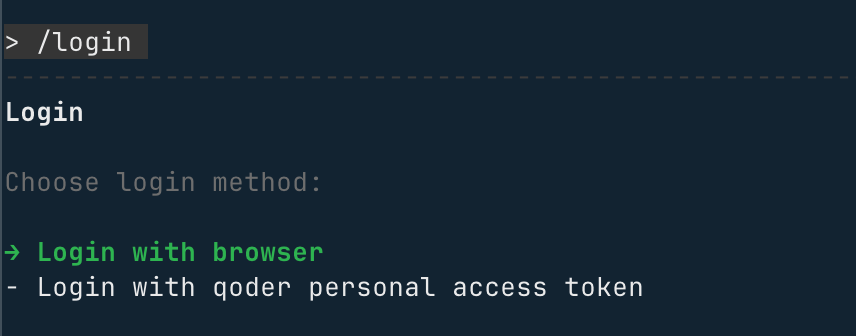
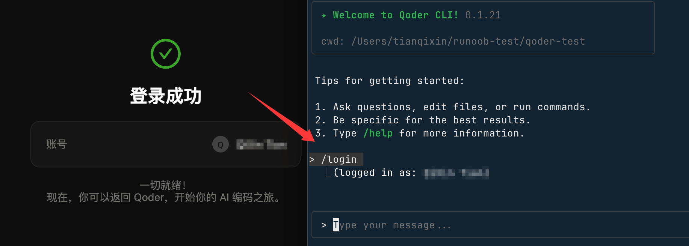
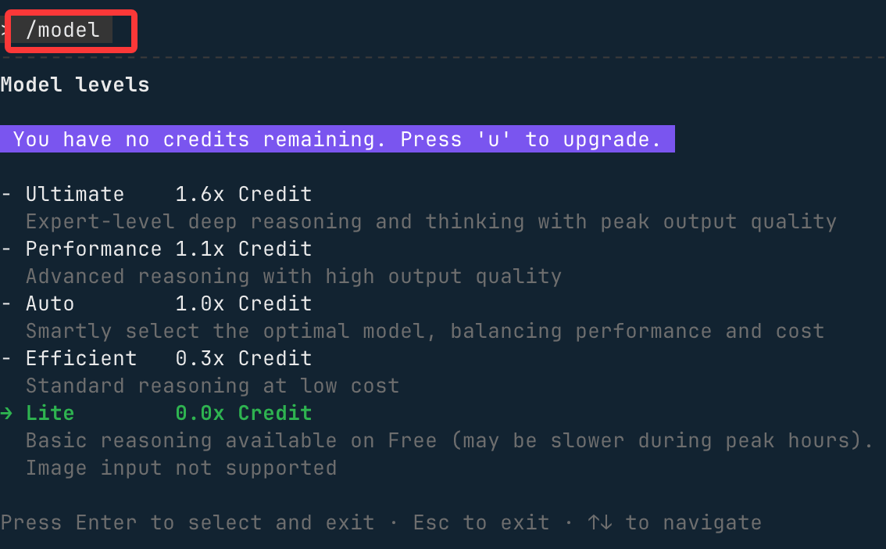

Qoder CLI
Qoder CLI is a command-line tool similar to Claude Code, supporting various operations in the terminal, suitable for development, automation scripts, and other scenarios.
Qoder CLI is the official command-line client provided by Qoder (https://qoder.com/) platform, supporting the following systems and architectures:
- Operating systems: macOS, Linux, Windows (Windows Terminal recommended)
- CPU architectures: arm64, amd64 (Windows arm64 not supported yet)

Click the top-rightDownloadbutton, selectCLI, and view the installation command:

Installation Methods
You can install it in the following ways.
1、cURL
# 安装 curl -fsSL https://qoder.com/install | bash # 升级 curl -fsSL https://qoder.com/install | bash -s -- --force
2、Homebrew（macOS、Linux）
brew install qoderai/qoder/qodercli --cask
3、NPM
npm install -g @qoder-ai/qodercli
After installation, run the following command.
qodercli --version
If the CLI version number printed is similar to0.1.21, the installation was successful.
Next, you can enter your project directory and start using Qoder CLI:
cd your-project qodercli
Log In to Your Account
When starting an interactive session with the qodercli command, you need to log in:
qodercli
On first use, you will be prompted to log in:

/login
Follow the prompts to log in with your account, and selectLogin with browser：

If you don't have an account yet, you canhttps://qoder.com/register an account on the webpage to get free Pro, or register directly with your Google or GitHub account.

After successful login, user information will be displayed:

When you need to log out of Qoder, you can use the/logoutcommand to log out.
# 在交互式提示符中 /logout
Use the following command to exit Qoder CLI:
/quit
Additionally, we can use the /model command to view and switch models:

Next, we can start entering requirements in the input box. For example, ask it to create a Vue project. After entering, Qoder will start organizing the requirements and writing code:
During the process, permission requests will appear. SelectAllowand press Enter:
In a moment, the entire project will be completed.
Qoder CLI Core Modes and Advanced Usage
TUI Mode (Interactive Text Interface)
TUI (Text User Interface) is the default interactive mode of Qoder CLI. It supports core operations such as text conversation and command execution, and is the primary method for daily use.
1. Startup Method
Run the following command in any project root directory to enter TUI mode:
qodercli
2. Input Modes
TUI provides multiple input modes for different operation scenarios. Enter the corresponding symbol to switch:
| Command Symbol | Mode Name | Description |
|---|---|---|
> |
Conversation Mode | Default mode. Enter any text to have a natural conversation with the CLI. |
! |
Bash Mode | In conversation mode, enter!, and you can directly run shell commands |
/ |
Slash Mode | In conversation mode, enter/, and you can invoke built-in function commands |
# |
Memory Mode | In conversation mode, enter#, and the content will be appended to the project'sAGENTS.mdmemory file |
\ + Enter |
Multi-line Input | Enter\and then press Enter to enter multi-line text content |
3. Built-in Tools
TUI mode includes common built-in tools, allowing you to operate files/execute commands without additional configuration:
- Grep: Search file contents
- Read: Read file contents
- Write: Modify/Write file contents
- Bash: Execute shell commands
4. Core Slash Commands
Enter/and then call the following built-in commands to quickly access CLI core features:
| Command | Description |
|---|---|
/login |
Log in to Qoder account |
/help |
Show complete TUI usage help |
/init |
Initialize/update the project'sAGENTS.mdmemory file |
/memory |
EditAGENTS.mdmemory file |
/quest |
Complete task delegation based on Spec |
/review |
Review local code changes |
/resume |
View/restore historical sessions |
/clear |
Clear the current session's historical context |
/compact |
Summarize the current session's historical context (condensed content) |
/usage |
View account status, Credits consumption, and other information |
/status |
View CLI status (version, model, account, API connectivity, tool status) |
/config |
View CLI system configuration |
/agents |
Sub-agent management (view/create/edit) |
/bashes |
View Bash tasks running in the background |
/release-notes |
View CLI changelog |
/vim |
Open an external editor to edit input content |
/feedback |
Provide feedback on CLI usage issues |
/quit |
Exit TUI mode |
/logout |
Log out of the currently logged-in account |
Advanced Startup Options
When starting Qoder CLI, you can customize startup behavior with the following parameters to adapt to different usage scenarios:
| Option | Description | Example |
|---|---|---|
-w |
Specify workspace directory | qodercli -w /Users/demo/projects/nacos |
-c |
Continue last session | qodercli -c |
-r |
Restore specified historical session | qodercli -r *******-c09a-40a9-82a7-a565413fa39 |
--allowed-tools |
Only allow specified built-in tools | qodercli --allowed-tools=READ,WRITE |
--disallowed-tools |
Disable specified built-in tools | qodercli --disallowed-tools=READ,WRITE |
--max-turns |
Set the maximum number of conversation turns | qodercli --max-turns=10 |
--yolo |
Skip permission checks (use with caution) | qodercli --yolo |
Print Mode (Non-interactive)
Print mode is a non-interactive batch execution mode with customizable output formats, suitable for automation scripts and CI/CD scenarios.
1. Startup Method
Run the following command to enter Print mode:
qodercli --print
2. Core Parameters
Print mode supports the following parameters, reusing some parameters from the Advanced Startup Options:
| Parameter | Description | Example |
|---|---|---|
-p |
Run Agent in non-interactive mode | qodercli -q -p "帮我分析当前项目的依赖结构" |
--output-format |
Specify output format (text/json/stream-json) | qodercli --output-format=json |
-w |
Specify workspace directory | Same as Advanced Startup Options |
-c |
Continue last session | Same as Advanced Startup Options |
-r |
Restore specified session | Same as Advanced Startup Options |
--allowed-tools |
Only allow specified tools | Same as Advanced Startup Options |
--disallowed-tools |
Disable specified tools | Same as Advanced Startup Options |
--max-turns |
Maximum number of conversation turns | Same as Advanced Startup Options |
--yolo |
Skip permission checks | Same as Advanced Startup Options |
MCP Service Integration
Qoder CLI supports integrating standard MCP (Model Context Protocol) tools to extend the boundaries of CLI capabilities (such as browser control, third-party tool invocation).
1. Adding MCP Services
Taking Playwright (browser control) integration as an example, run the following command:
qodercli mcp add playwright -- npx -y @playwright/mcp@latest
2. Managing MCP Services
| Command | Description |
|---|---|
qodercli mcp list |
List all added MCP services |
qodercli mcp remove playwright |
Remove a specified MCP service (example: playwright) |
3. Advanced Configuration (Optional)
-t: Set the MCP service type, supportsstdio/sse/streamable-http(Stdio type will be automatically launched when TUI starts);-s: Set the service scope, supports "user-level" or "project-level"; you can customize MCP configuration per project.
4. MCP Service File Storage Location
The added MCP service configurations will be saved in the following files:
# 为当前用户或特定项目添加，不会被提交。
~/.qoder.json
# 为当前项目添加，通常会被提交。
${project}/.mcp.json